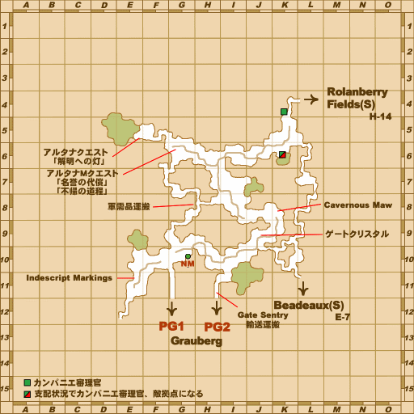

Before you begin
- Complete B-02: Fires of Discontent.
- Complete WotG 2: Back to the Beginning; Cait Sith should be the current mission.
- Bring 30 Goblin Chocolates or 5,000 gil. Every entrant needs a Mine Shaft Key.
Starting point
Gentle Tiger · Bastok Markets [S] · H-6
Walkthrough
- Speak with Gentle Tiger at H-6, Pagdako at H-9, then Blatherix at F-8 in Bastok Markets [S].
- Trade Blatherix exactly 30 Goblin Chocolates or 5,000 gil to receive the Mine Shaft Key.
- Enter Pashhow Marshlands [S] from Grauberg [S] for the required scene. Entering from another border does not substitute for this step.
- Examine the Corroded Door at F-5 in Pashhow Marshlands [S] and select Light in the Darkness to enter Ruhotz Silvermines.
- Defeat any seven of the ten Quadav. They begin close to the party; move clear before preparing, then pull manageable groups. Victory triggers once seven are defeated.
- After the exit scene, return to Gentle Tiger in Bastok Markets [S] for the Adaman Ingot.
Battle and progress notes
- The native instance spawns nine Sapphirine Quadav and one Sapphire Quadav. The latter can use Benediction; killing it disperses the others temporarily.
- A failed attempt can be retried with a replacement key from Blatherix for 10 Goblin Chocolates or 1,000 gil.
- The initial next-day wait is a TODO in this quest’s source, so this guide does not require a real-world midnight wait. Completion sets the next quest’s game-day and zoning checks.
Completion and reward
Adaman Ingot.
What this opens
- B-04: Burden of Suspicion, after the next Vana’diel day and a zone change
Area maps
Open a zone below, then select a map to enlarge it. Match the named floors and grid coordinates in the steps; these are reference area maps, not a live position tracker.
Bastok Markets (S)


Grauberg (S)

Pashhow Marshlands (S)


Ruhotz Silvermines


Zone guides
References
- BG Wiki reference walkthrough
- FFXIclopedia reference walkthrough
- Reviewed mission implementation
- Reviewed mission implementation
Steps are an original summary of the linked walkthrough and reviewed source. Other servers’ bonus rewards are not included. How to read requirements, waits and battlefield notes.